把手边的任何东西，一键送上墨水屏
Mac 端不是 iOS App 的移植，也不是 Web Portal 的壳。它的独占价值只有一件事：你正在电脑上看到的东西，最快能到达墨水屏。围绕这一点，界面被拆成三层——常驻的菜单栏、随叫随到的 HUD、需要时才打开的主窗口。
定位与端上分工
三个已有的端各自解决了一部分问题。Mac 端要补的，是"在电脑前工作时，内容进入墨水屏的路径太长"。
| 端 | 核心场景 | 能力边界 |
|---|---|---|
| iOS App | 随身捕捉、设备配对 | 分享菜单、快捷指令、小组件；设备管理与热力图完整 |
| Web Portal | 账号、订阅、API token | 唯一的注册入口与计费入口；桌面端一律外链到这里 |
| Electron（现状） | 快捷键速推 | 已验证 HUD 形态与 Services 菜单，但设备列表是写死的 mock，无设备管理 |
| Mac 原生 | 工作流中的推送 + 桌面级设备管理 | Electron 的全部 + 真实设备管理 + 系统级入口（Services / 快捷指令 / 拖拽 / 通知） |
三条设计原则
一、推送必须在 3 秒内完成。从按下 ⌘⇧I 到内容离手，中间不允许出现"选设备""选时长""确认"这类必答题。Auto 模式是默认且唯一的快路径，Manual 是可选的绕行。
二、主窗口是"看"的地方，HUD 是"做"的地方。主窗口不承担快速输入职责（它有 Quick Send，但那只是把 HUD 调起来）；HUD 不承担管理职责（它没有设备列表页）。两者不重复造轮子。
三、刷新不清屏。沿用 iOS 端已经写进代码的约定：任何刷新失败或任务被取消时，保留旧内容，不闪空、不回退到 loading 骨架。
三个界面层
App 以 accessory 模式常驻（默认无 Dock 图标）。菜单栏是唯一永远在场的东西，HUD 和主窗口都是按需出现的。
菜单栏 · MenuBarExtra
常驻状态栏图标。点开是一份"设备现状 + 动作"的速查表：每台设备一行（在线点、电量、最后在线），下面是 Send / Open / Show next / Settings / Quit。
图标本身携带状态：全部在线为实心字标，任一离线为空心，上传中为进度环。
HUD · NSPanel
全局快捷键唤起的浮层，不激活 App、不抢当前窗口的空间（floating panel，跟随当前 Space 与屏幕）。唤起瞬间读取上下文：选中文本、前台浏览器的 URL。
发送完成后自动收起，焦点交还原来的 App。
主窗口 · NavigationSplitView
标准可缩放窗口，默认 1040×720，最小 880×600。左侧栏三项：Home / Displays / Knowledge，底部是账号行。
设置不在侧栏里——按 Mac 习惯做成独立的 Settings 窗口（⌘,）。
为什么设置要独立成窗口
iOS 把 Settings 作为第四个 Tab 是对的，因为手机没有"窗口"概念。Mac 上用户对 ⌘, 的肌肉记忆非常强，而且设置里有一项必须能在主窗口关闭时打开——快捷键录制：用户从菜单栏点 Settings 改快捷键，不应该被迫先打开一个 1040×720 的窗口。
窗口与生命周期
| 对象 | 类型 | 行为 |
|---|---|---|
| 菜单栏 | MenuBarExtra | 随 App 常驻，退出前不销毁 |
| HUD | NSPanel · nonactivating · floating | 常驻内存、按需显示；再次按快捷键或 Esc 收起；失焦不自动关（防止拖拽文件时误关） |
| 主窗口 | WindowGroup（单实例） | 关闭即释放；菜单栏 Open / Dock 图标点击可重开 |
| 设置 | Settings scene | ⌘, 打开，六个 tab |
| 登录 | 独立 window，480×560 | 未登录时由任意入口触发；登录成功后自行关闭并回到触发源 |
.accessory（只有菜单栏，不占 Dock、不进 ⌘Tab）。设置里提供"在 Dock 中显示"开关，打开后切 .regular —— 因为拖文件到 Dock 图标推送，是一个真实存在的桌面习惯。系统集成 —— Mac 端的真实护城河
这一章是 Mac 版存在的理由。每一项都要能回答："用户为什么不直接开浏览器？"
| 入口 | 优先级 | 说明与技术方案 |
|---|---|---|
| 全局快捷键 | P0 | 默认 ⌘⇧I，可在设置中重录。用 NSEvent 全局监听或 Carbon RegisterEventHotKey（后者不需辅助功能权限，更稳）。 |
| 上下文抓取 | P0 | 唤起时并行取两样东西：选中文本（优先 Accessibility API 读 AXSelectedText，无权限时回退到合成 ⌘C + 剪贴板还原，即 Electron 现在的做法）与前台浏览器 URL（AppleScript，覆盖 Safari / Chrome 系 / Firefox）。抓到的内容以灰色幽灵文本预填，按 Tab 采纳、Esc 丢弃 —— 绝不直接写进输入框。 |
| Services 菜单 | P0 | "Send to inklet"。原生只需 Info.plist 的 NSServices + NSApp.servicesProvider，不再需要 Electron 那个 Obj-C++ N-API addon（native/services/services.mm 可以整块删掉）。接收 text / url / file-url / image 四类。 |
| 拖拽 | P0 | 拖文件/图片/链接到 HUD 变成附件；拖到 Dock 图标直接进入待发送状态并唤起 HUD。 |
| 通知 | P1 | UNUserNotificationCenter。首版只发本地通知：上传完成 / 上传失败可重试 / 设备已就绪显示。服务端推送（内容送达、设备离线）需后端先支持，见第 10 章。 |
| 快捷指令 · App Intents | P1 | 直接复用 iOS 已有的三个 Intent（Send Text / Send Link / Send Image or File），Swift 代码几乎可以整段搬过来。macOS 上还能被 Automator、Raycast、终端 shortcuts run 调用。 |
| 分享扩展 | P1 | Share Extension（.appex）让 inklet 出现在系统分享面板里。需要 App Group 共享 Keychain。Services 菜单已覆盖大部分场景，所以排在 P1。 |
| 桌面小组件 | P2 | macOS 14 桌面小组件：Quick Send 与 Activity 热力图，与 iOS 版共用 WidgetKit 代码和 App Group 数据格式。 |
| 开机启动 / 自动更新 | P0 | SMAppService.mainApp.register()；更新用 Sparkle 2（与现在 electron-updater 的产品行为一致：静默检查、有更新时弹卡片）。 |
HUD 速推面板
560×可变高。整个 App 90% 的使用时间发生在这 560 像素里，它必须比 Spotlight 更快消失。
GET /api/devices（Electron 版这里是写死的三台假设备）。键盘流
| 按键 | 行为 |
|---|---|
⌘⇧I | 唤起 / 收起（可改）。唤起时光标已在输入框，并抓取上下文 |
Tab / → | 采纳幽灵建议 |
↩ | 发送 |
⇧↩ | 换行 |
⌘V | 粘贴，图片自动转附件 |
Esc | 有建议时丢弃建议；否则收起 HUD（内容保留到下次唤起） |
⌘⌫ | 清空当前输入与附件 |
主窗口
三个页面：Home 看全局，Displays 管设备，Knowledge 翻已推送的内容。下面的原型可以点侧边栏切换。

Study
Online · synced 2m ago Rename Show next Push herePair a new display
在墨水屏上打开设置，屏幕会显示一个 6 位配对码。
也可以 用摄像头扫码 — 支持 Mac 内置摄像头与连续互通相机
各页要点
| 页面 | 内容与取舍 |
|---|---|
| Home | 问候 + 日期、天气条（可关）、Quick Send 卡、26 周热力图 + streak、设备卡横排、套餐行。与 iOS 首页同构，方便共用取数逻辑。Mac 上删掉 iOS 的"Your Plan"独立区块，套餐信息挪到侧栏账号行与设置里。 |
| Displays | 网格卡片而非列表——桌面有横向空间，直接把每台设备"当前展示什么"用 e-ink 预览图铺出来，这是 iOS 上做不到的信息密度。离线设备整卡降透明度。 |
| 设备详情 | 左：当前展示（真机外框 + bitmap）。右：设备信息表 + 队列/历史（游标分页）。顶部动作：Rename / Show next（push/refresh）/ Push here（把 HUD 调起并预选该设备）。危险操作 Unbind 收在 Rename 弹窗里，红色 + 二次确认。 |
| 配对 | 以 6 位码为主路径（Mac 用户习惯打字），摄像头扫码为次路径。错误码逐一映射文案，沿用 iOS 已有的四种：格式错 / 无此设备 / 已被他人绑定 / 码已过期。 |
| Knowledge | raw-items 列表，Organized / Pending 分段 + 搜索。首版只读。后端目前的 /api/raw-items 只返回 id/type/status/时间，没有标题与摘要——列表里的标题需要后端补字段，否则只能显示类型和 ID（见第 10 章）。 |
设置与登录
设置是独立窗口（⌘,），六个 tab。登录是一个 480×560 的独立窗口，三种登录方式与 iOS 完全一致。
没有账号？在浏览器中注册
ASWebAuthenticationSession → inklet:// 回调）/ Apple（原生按钮 + nonce）。错误以顶部 banner 显示 3 秒后消失，与 iOS 一致。注册不在 App 内。令牌与会话
access / refresh token 存 Keychain（Electron 版是明文 JSON 存在 userData 目录，这是个应当在原生版修掉的问题）。用户资料这类非敏感信息放 UserDefaults，供菜单栏和 HUD 同步读取。
会话恢复顺序与 iOS 相同：accessToken 调 /auth/me → 失败用 refreshToken 刷新重试 → 仍失败则清空凭证。App 启动时在后台完成，不阻塞菜单栏出现。
流程与状态
三条关键路径：启动、推送、错误处理。
启动
没有闪屏。菜单栏图标必须立刻出现（这是 accessory App 的礼节），会话恢复在后台跑，恢复期间图标显示为空心状态。
菜单栏显示 Sign in
推送
发送是乐观的：按下回车后 HUD 立即进入成功态并收起，上传在后台继续。失败时通过通知回来（"Push failed — Retry"），点通知重新唤起 HUD 并还原内容。这样用户不必盯着一个进度条等。
错误处理的统一规则
| 场景 | 表现 |
|---|---|
| 登录失败 | 登录窗口顶部 banner，3 秒后自动消失。401 → "Invalid email or password"；OAuth 流不映射 401，透传后端错误 |
| 上传失败 | 本地通知 + HUD 内容保留；发送键变红 2 秒后复位 |
| 列表拉取失败 | 页面内一行错误 + Retry 按钮；已有内容不清空 |
| 配对失败 | 码输入框下方一行红字，四种错误码分别映射文案 |
| 会话过期 | 静默刷新一次；仍失败则清凭证、菜单栏变 Sign in，不弹打断式弹窗 |
| 无网络 | 菜单栏图标加一道斜线；HUD 仍可编辑，发送时排队并提示"Will send when back online"（P1） |
设计系统
直接沿用 iOS 端的 InkletTheme：同一套语义 token，暗色是品牌色的"暖色反转"。Mac 端只增加窗口层级相关的少量 token。
字标 —— 一个整体，永不换行
「inklet PORTAL」是一个不可拆分的商标。后缀（PORTAL / for Mac）永远与 inklet 同行、基线对齐，跟在右侧；不换行、不居中堆叠、不因为容器变窄而折行。实现上封装成一个 Wordmark 视图，内部 HStack(alignment: .firstTextBaseline) + .fixedSize()，从根上杜绝折行。
色板（浅色 / 深色）
深色下的 HUD
字体与字阶
| 角色 | 用法 |
|---|---|
| Newsreader | 字标、页面大标题、e-ink 预览里的内容标题。只用 Regular，不加粗 |
| Inter | 正文与控件，Regular / Medium 两档 |
| SF Mono | 时间戳、设备参数、eyebrow 标签，全大写 + 字距 .14em |
尺寸约定
| 圆角 | 窗口 11 · 卡片 10 · 控件 7 · 附件 8 |
| 控件高 | 27（HUD 内）· 30（主窗口） |
| 栅格 | 4 的倍数；页面边距 20–22 |
| 动效 | 120ms 反馈 · 200ms 过渡 · 400ms 页面切换，全部 ease-out；尊重"减弱动态效果" |
控件策略：能不能全用原生？
能，而且默认就该用。分界线不在「好不好看」，而在系统里有没有对应物——凡是 AppKit / SwiftUI 已经提供的控件，一律用原生；只有系统没有对应物的内容视图才自绘。
把「用原生控件」拆成三档，每个界面元素只能落在其中一档：
.tint(InkletTheme.text)，所有 borderedProminent 按钮、Toggle、Segmented Picker、选中态、焦点环就都变成墨黑，不必逐个重绘。这正是 B 档存在的意义——品牌通过排版、纸色底、字标表达，而不是通过重画一个开关。原生控件在 inklet 主题下的样子
逐项归属
| 界面元素 | 用什么 | 说明 | |
|---|---|---|---|
| A | 侧边栏 / 页面容器 | NavigationSplitView + List(.sidebar) | 连同折叠、宽度记忆、⌘⌃S 一起白拿 |
| A | 工具栏 | .toolbar { ToolbarItem } | 用户可自定义工具栏、窄窗口自动折叠成 » |
| A | 设置窗口 | Settings + TabView + Form(.grouped) | 直接长成系统设置的样子，⌘, 免费 |
| A | 菜单栏 | MenuBarExtra(style: .menu) | 真·系统菜单，不是伪装成菜单的窗口 |
| A | 空态 | ContentUnavailableView | macOS 14+ |
| A | 确认 / 重命名 / 解绑 | .confirmationDialog · .sheet · .alert | 破坏性操作用系统的红色 destructive role |
| A | 右键菜单 / 拖放 | .contextMenu · .dropDestination | 拖放高亮由系统绘制 |
| B | 按钮 / 开关 / 分段控件 | 原生 + .tint(ink) | 一行根视图 tint 全局生效 |
| B | 输入框 | TextField + 纸色背景 | 保留系统焦点环与右键（拼写、替换、服务） |
| B | Sign in with Apple | SignInWithAppleButton | 必须用官方按钮，只能调黑白与圆角 |
| C | 字标 | 自绘 Wordmark | 见 07 章：横排、不可换行 |
| C | HUD 面板底板 | NSPanel + 纸色圆角 | 系统没有「不抢焦点的输入浮层」这个现成物 |
| C | HUD 输入区 | 自定义 NSTextView | 要在同一处叠加幽灵建议并支持 Tab 采纳，系统 TextEditor 做不到 |
| C | 热力图 / e-ink 预览 / 附件卡 | Canvas · 自绘视图 | 这些是内容，不是控件 |
| C | 6 位配对码 | 6 个 TextField 组合 | 需要自动跳格、整段粘贴、退格回跳 |
| C | 快捷键录制器 | 自绘 + NSEvent 监听 | 系统未开放此控件；不引第三方库 |
为什么不走极端
不全 A（连 tint 都不调）：系统强调色跟着用户的个人偏好走，可能是蓝、粉、橙。inklet 的主按钮是墨黑，这是品牌资产，不能交给系统随机。
不全 C（像 iOS 版那样自绘）：iOS 端自绘 InkToggle 已经付出了代价——要自己保证深浅色下旋钮的对比度。Mac 用户对控件行为的期待严格得多：Tab 遍历顺序、焦点环、VoiceOver 标签、右键菜单、拖放高亮、「减弱动态效果」、辅助功能里的「增强对比度」。这些自绘全都要重写一遍，而且每次系统更新都可能对不上。
结论：控件交给系统，气质交给排版、纸色和字标。这也让代码量显著下降——现在 Electron 版那 1900 行 tsx 里有相当一部分是在手绘 toggle、下拉和按钮 hover。
接口依赖
全部复用 iOS 已经打通的接口，服务层代码（AuthService / DeviceService / ContentService / KeychainService）可以跨平台共享，只需替换 UIKit 相关的少量代码。
| 域 | 接口 | 用在哪 |
|---|---|---|
| auth.iminklet.com | POST /auth/login | 登录窗口 |
POST /auth/refresh · GET /auth/me | 启动恢复、401 自动重试 | |
/auth/oauth/google?client=desktop | Google 登录，回调 inklet:// | |
POST /auth/oauth/apple/native | Sign in with Apple | |
| dev.iminklet.com | GET /api/devices | 菜单栏、Home、Displays、HUD 的 Manual 选择器 |
GET /api/devices/{id}/health | 设备详情的实时状态 | |
GET /api/devices/{id}/push | "当前展示"预览图 | |
POST /api/devices/{id}/push/refresh | Show next | |
GET /api/devices/{id}/pushes | 历史（游标分页） | |
PUT /nickname · POST /unbind · POST /bind/code | 重命名、解绑、配对 | |
| 内容 | POST /api/raw-items/upload → S3 → /confirm | 所有推送路径（HUD、Services、拖拽、快捷指令）共用同一个三步上传 |
GET /api/raw-items | Knowledge 列表、Home 热力图 |
dev.iminklet.com。Mac 端首版就应该把它做成可配置（Debug/Release 两套 + 内部隐藏开关），避免重蹈 iOS 上线前才发现要切环境的覆辙。分期与待定问题
分期
| 阶段 | 目标 | 范围 |
|---|---|---|
| P0 | 能替换掉现在的 Electron 版 | 登录（三种方式，Keychain）· HUD 全功能（文本/图片/文件/链接、Auto、附件、幽灵建议、草稿）· 全局快捷键 · Services 菜单 · 拖拽 · 菜单栏 · 主窗口 Home / Displays / 详情 / 配对 · 设置（General / Account / Shortcuts / About）· Sparkle 自动更新 · 深浅色 |
| P1 | 比 Electron 版明显更好 | Manual 模式（真实设备 + 时长）· Knowledge 页 · 本地通知 · App Intents / 快捷指令 · Share Extension · 天气 · 离线队列 · 摄像头扫码配对 |
| P2 | 桌面独占能力 | Obsidian / Logseq 本地库同步（Sources）· 桌面小组件 · Spotlight / Raycast 集成 · Store 页 · 多账号 |
需要你拍板的问题
Electron 版的 Manual 只是 UI，设备是写死的假数据，时长参数没有真正发出去；Web Portal 的 Manual 走 POST /api/devices/{id}/cmd 且只支持纯文本。而设计里 Manual 是可以带附件的。
→ 需要后端提供"指定设备 + 展示时长"的上传参数（例如 upload 时带 targetDeviceId / ttl），否则 Mac 版的 Manual 也只能退化成纯文本直推。
本设计假定 Developer ID + 公证。若走 MAS，沙盒会让"抓取选中文本 / 前台浏览器 URL"和 Sparkle 更新都不可用，HUD 的幽灵建议会失去大半价值。
→ 建议 Developer ID 直发（与现状一致），MAS 留作后续单独评估。
GET /api/raw-items 目前只返回 id / type / status / 时间戳，没有标题、摘要、缩略图。列表会显示成一堆 UUID。
→ 需要后端在列表接口补 title / summary（或提供 detail 接口）。若短期做不了，Knowledge 页应推迟到 P1 之后。
"内容已送达设备""设备离线"这类提醒需要服务端事件。iOS 端的 APNs 链路也尚未闭环。
→ 首版只做本地通知（上传成功/失败）。若要做设备状态提醒，最省事的方案是 Mac 端低频轮询 /api/devices（例如 5 分钟一次，App 在前台时才轮询），确认是否接受。
WeatherKit 需要付费开发者账号配置 entitlement，并且必须显示 Apple 天气归因 logo。Mac 上用户的菜单栏通常已经有天气。
→ 建议 Mac 版首页保留（与 iOS 一致，默认开启，可关），但排到 P1。
iOS 是单文件 ≤10MB、图片最多 5 张。Mac 上拖一个 30MB 的 PDF 是很自然的动作。
→ 需要确认后端与 S3 预签名的实际上限，再决定 Mac 端提示文案（"文件超过 10MB"还是直接支持）。
两者共用 inklet:// URL scheme 和同一个快捷键，同时装会互相抢。
→ 建议原生版首次启动时检测到 Electron 版存在则提示"发现旧版本，是否退出并移到废纸篓"，并沿用同一个 Sparkle appcast 做过渡。
下一步
这份稿子确认后，我会按 P0 范围搭 Xcode 工程：SwiftUI App + MenuBarExtra + NSPanel HUD，服务层从 inklet-ios 直接搬（改掉 UIKit 依赖），先把"⌘⇧I → 打字 → 回车 → 上屏"这条主链路跑通，再补主窗口的三个页面。